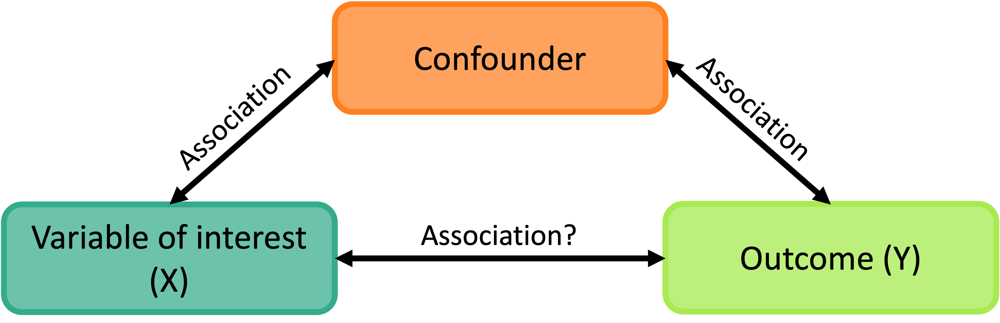
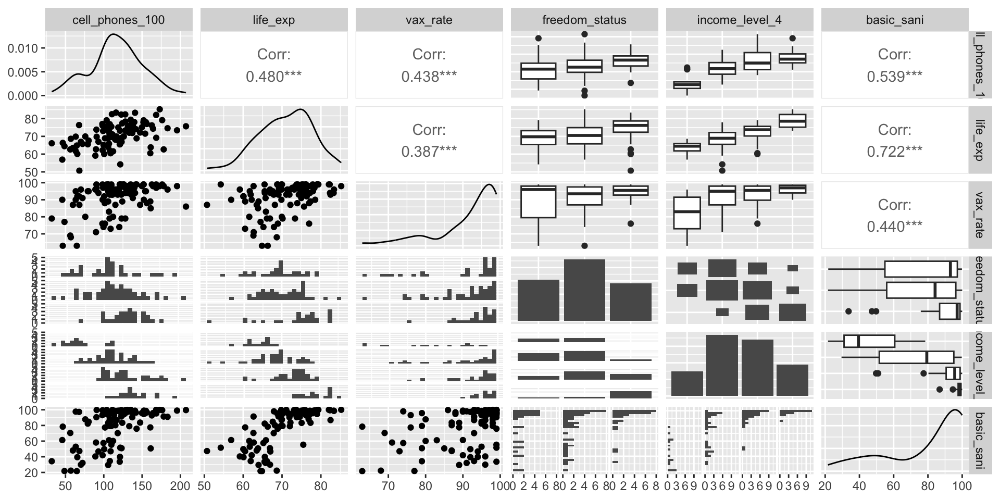
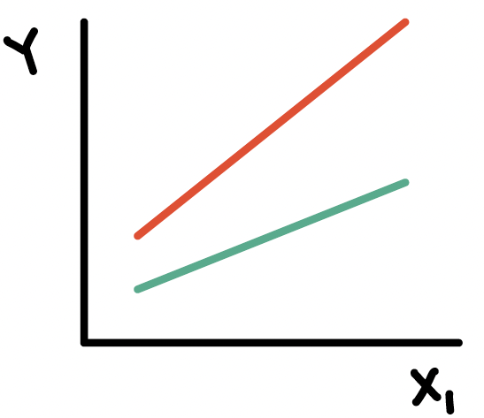
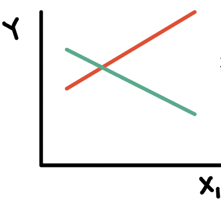
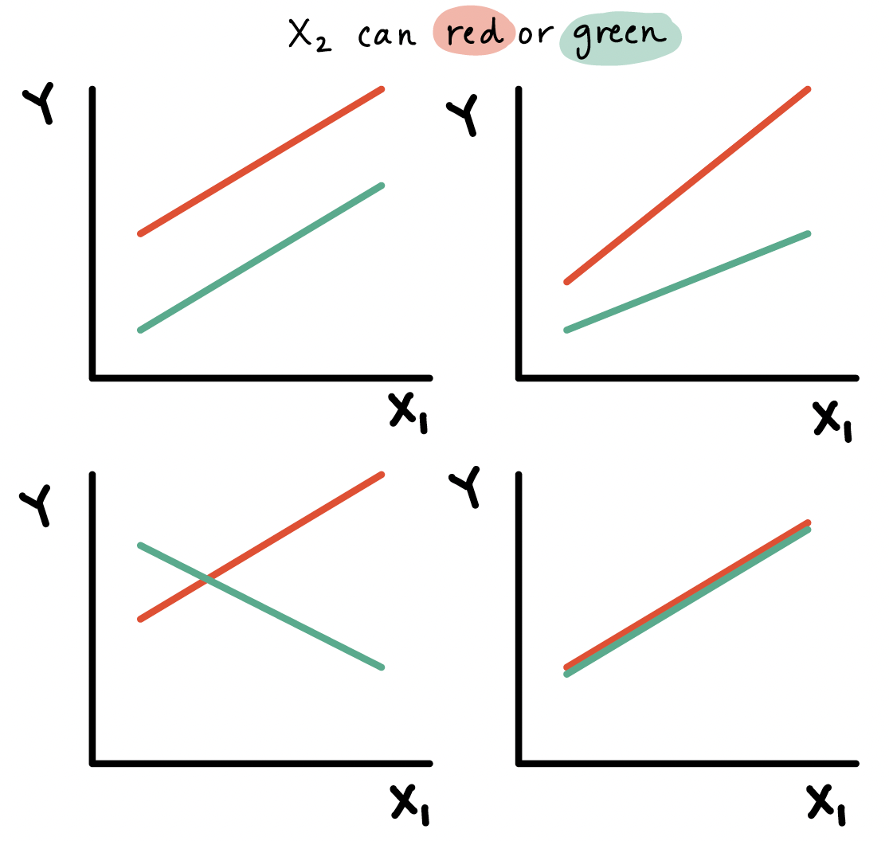
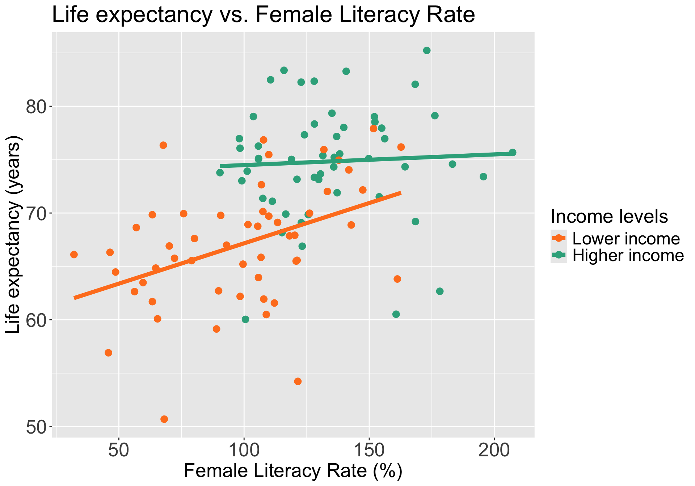
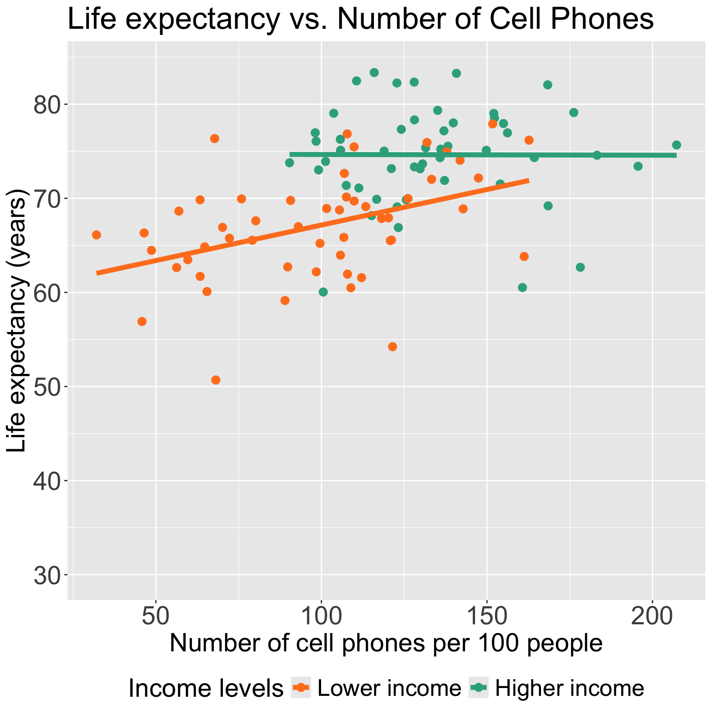
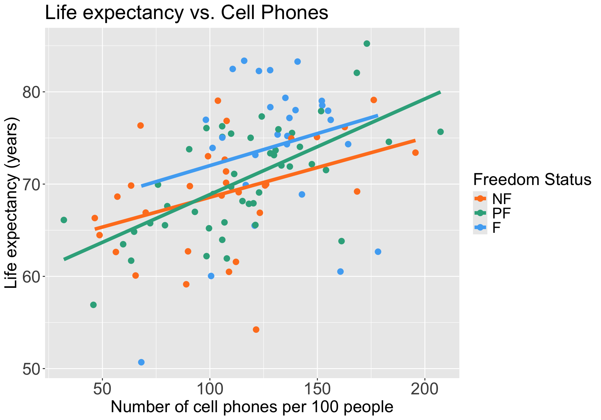

Lesson 11: Interactions, Part 1
2026-02-23
Learning Objectives
This time:
- Define confounders and effect modifiers, and how they interact with the main relationship we model.
- Interpret the interaction component of a model with a binary categorical covariate and continuous covariate, and how the main variable’s effect changes.
- Interpret the interaction component of a model with a multi-level categorical covariate and continuous covariate, and how the main variable’s effect changes.
Next time:
- Interpret the interaction component of a model with two categorical covariates, and how the main variable’s effect changes.
- Interpret the interaction component of a model with two continuous covariates, and how the main variable’s effect changes.
Regression analysis process


Model Selection
Building a model
Selecting variables
Prediction vs interpretation
Comparing potential models
Model Fitting
Find best fit line
Using OLS in this class
Parameter estimation
Categorical covariates
Interactions
Model Evaluation
- Evaluation of model fit
- Testing model assumptions
- Residuals
- Transformations
- Influential points
- Multicollinearity
Model Use (Inference)
- Inference for coefficients
- Hypothesis testing for coefficients
- Inference for expected \(Y\) given \(X\)
- Prediction of new \(Y\) given \(X\)
Recall our data and the main relationship

Learning Objectives
This time:
- Define confounders and effect modifiers, and how they interact with the main relationship we model.
- Interpret the interaction component of a model with a binary categorical covariate and continuous covariate, and how the main variable’s effect changes.
- Interpret the interaction component of a model with a multi-level categorical covariate and continuous covariate, and how the main variable’s effect changes.
Next time:
- Interpret the interaction component of a model with two categorical covariates, and how the main variable’s effect changes.
- Interpret the interaction component of a model with two continuous covariates, and how the main variable’s effect changes.
What is a confounder?
- A confounding variable, or confounder, is a factor/variable that wholly or partially accounts for the observed effect of the risk factor on the outcome
A confounder must be…
- Related to the outcome Y, but not a consequence of Y
- Related to the explanatory variable X, but not a consequence of X

- A classic example: We found an association between ice cream consumption and sunburn!
- If we adjust for a potential confounder, temperature/hot weather, we may see that the association between ice and sunburn is not as large
- Another example: We found an association between socioeconomic status (SES) and lung cancer!
- If we adjust for a potential confounder, exposure to air pollution, we may see that the association between SES and lung cancer decreases
Proxies and confounders: the good and the harmful
- This is totally my own tangent
- A proxy variable is used to stand-in or represent another variable that is harder to measure
- Sometimes a confounder can be used as a proxy if it is hard to measure you explanatory variable/variable of interest
- Proxies can be helpful statistically while harmful socially OR helpful for both!
- Examples
- Bad: BMI serving as a measurement for physical health or diet
- Many studies show how harmful, mentally and physically, it is to equate BMI to health
- Interesting: Using occurrence of online search queries as a proxy for public health risk perception
- Helpful contextualization: Using race as a proxy for systemic racism, and thus a way to identify how to and who needs resources
- Bad: BMI serving as a measurement for physical health or diet
- In our lab, I discuss using sex assigned at birth in our model
Exploratory approach to identifying confounders

Including a confounder in the model
- In the following model we have two variables, \(X_1\) and \(X_2\)
\[Y= \beta_0 + \beta_1X_{1}+ \beta_2X_{2} + \epsilon\]
And we assume that every level of the confounder, there is parallel slopes
Note: to interpret \(\beta_1\), we did not specify any value of \(X_2\); only specified that it be held constant
- Implicit assumption: effect of \(X_1\) is equal across all values of \(X_2\)
The above model assumes that \(X_{1}\) and \(X_{2}\) do not interact (with respect to their effect on \(Y\))
Epidemiology: no “effect modification”
Meaning the effect of \(X_{1}\) is the same regardless of the values of \(X_{2}\)
This model is often called a “main effects model”
Where have we modeled a confounder before?
We have seen a plot of life expectancy vs. cell phones with different levels of food supply colored (Lesson 8)
In our plot and the model, we treat food supply as a confounder
If food supply is a confounder in the relationship between life expectancy and cell phones, then we only use main effects in the model:
\[\text{LE} = \beta_0 + \beta_1 \text{CP} + \beta_2 \text{VR} + \epsilon\]
Poll everywhere question 1
What is an effect modifier?
An additional variable in the model
- Outside of the main relationship between \(Y\) and \(X_1\) that we are studying
An effect modifier will change the effect of \(X_1\) on \(Y\) depending on its value
Aka: as the effect modifier’s values change, so does the association between \(Y\) and \(X_1\)
So the coefficient estimating the relationship between \(Y\) and \(X_1\) changes with another variable
Example: A breast cancer education program (the exposure) that is much more effective in reducing breast cancer (outcome) in rural areas than urban areas.
- Location (rural vs. urban) is the EMM


How do we include an effect modifier in the model?
Interactions!!
We can incorporate interactions into our model through product terms: \[Y = \beta_0 + \beta_1X_{1}+ \beta_2X_{2} + \beta_3X_{1}X_{2} + \epsilon\]
Terminology:
main effect parameters: \(\beta_1,\beta_2\)
- The main effect models estimate the average \(X_{1}\) and \(X_{2}\) effects
interaction parameter: \(\beta_3\)
Types of interactions / non-interactions
Common types of interactions:
Synergism: \(X_{2}\) strengthens the \(X_{1}\) effect
Antagonism:\(X_{2}\) weakens the \(X_{1}\) effect
If the interaction coefficient is not significant
- No evidence of effect modification, i.e., the effect of \(X_{1}\) does not vary with \(X_{2}\)
If the main effect of \(X_2\) is also not significant
- No evidence that \(X_2\) is a confounder

Learning Objectives
This time:
- Define confounders and effect modifiers, and how they interact with the main relationship we model.
- Interpret the interaction component of a model with a binary categorical covariate and continuous covariate, and how the main variable’s effect changes.
- Interpret the interaction component of a model with a multi-level categorical covariate and continuous covariate, and how the main variable’s effect changes.
Next time:
- Interpret the interaction component of a model with two categorical covariates, and how the main variable’s effect changes.
- Interpret the interaction component of a model with two continuous covariates, and how the main variable’s effect changes.
Do we think income level is an effect modifier for cell phones?
Let’s say we only have two income groups: low income and high income
We can start by visualizing the relationship between life expectancy and cell phones by income level
Questions of interest: Is the effect of number of cell phones on life expectancy differ depending on income level?
- This is the same as: Is income level is an effect modifier for cell phones?
- “effect of cell phones” differing = different slopes between CP and LE depending on the income group
Let’s run an interaction model to see!

Model with interaction between a binary categorical and continuous variables
Model we are fitting:
\[ LE = \beta_0 + \beta_1 CP + \beta_2 I(\text{high income}) + \beta_3 CP \cdot I(\text{high income}) + \epsilon\]
- \(LE\) as outcome
- \(CP\) as continuous variable that is our main variable of interest
- \(I(\text{high income})\) as the indicator that income level is “high income” (binary categorical variable)
OR
Displaying the regression table and writing fitted regression equation
Code to display regression table with interaction
| term | estimate | std.error | statistic | p.value | conf.low | conf.high |
|---|---|---|---|---|---|---|
| (Intercept) | 59.609 | 2.406 | 24.776 | 0.000 | 54.836 | 64.382 |
| cell_phones_100 | 0.076 | 0.023 | 3.247 | 0.002 | 0.029 | 0.122 |
| income_level_2Higher income | 13.879 | 4.438 | 3.127 | 0.002 | 5.075 | 22.683 |
| cell_phones_100:income_level_2Higher income | −0.066 | 0.036 | −1.829 | 0.070 | −0.137 | 0.006 |
\[ \begin{aligned} \widehat{LE} = & \widehat\beta_0 + \widehat\beta_1 CP + \widehat\beta_2 I(\text{high income}) + \widehat\beta_3 CP \cdot I(\text{high income}) \\ \widehat{LE} = & 59.61 + 0.076 \cdot CP + 13.879 \cdot I(\text{high income}) -0.066 \cdot CP \cdot I(\text{high income}) \end{aligned}\]
Poll Everywhere Question 2
Comparing fitted regression lines for each income level
\[ \begin{aligned} \widehat{LE} = & \widehat\beta_0 + \widehat\beta_1 CP + \widehat\beta_2 I(\text{high income}) + \widehat\beta_3 CP \cdot I(\text{high income}) \\ \widehat{LE} = & 59.61 + 0.076 \cdot CP + 13.879 \cdot I(\text{high income}) -0.066 \cdot CP \cdot I(\text{high income}) \end{aligned}\]
For lower income countries: \(I(\text{high income}) =0\)
\[ \begin{aligned} \widehat{LE} = & \widehat\beta_0 + \widehat\beta_1 CP + \widehat\beta_2 \cdot 0 + \widehat\beta_3 CP \cdot 0 \\ \widehat{LE} = & 59.61 + 0.076 \cdot CP + 13.879 \cdot 0 \\ & -0.066 \cdot CP \cdot 0 \\ \widehat{LE} = & 59.61 + 0.076 \cdot CP \end{aligned}\]
For higher income countries: \(I(\text{high income}) =1\)
\[ \begin{aligned} \widehat{LE} = & \widehat\beta_0 + \widehat\beta_1 CP + \widehat\beta_2 \cdot 1 + \widehat\beta_3 CP \cdot 1 \\ \widehat{LE} = & 59.61 + 0.076 \cdot CP + 13.879 \cdot 1 \\ & -0.066 CP \cdot 1 \\ \widehat{LE} = & (59.61 + 13.879) + (0.076 -0.066) \cdot CP \\ \widehat{LE} = & 73.49 + 0.01 \cdot CP \end{aligned}\]
Let’s take a look back at the plot
For lower income countries: \(I(\text{high income}) =0\)
\[ \begin{aligned} \widehat{LE} = & \widehat\beta_0 + \widehat\beta_1 CP\\ \widehat{LE} = & 59.61 + 0.076 \cdot CP \end{aligned}\]
For higher income countries: \(I(\text{high income}) =1\)
\[ \begin{aligned} \widehat{LE} = & (\widehat\beta_0 +\widehat\beta_2) + (\widehat\beta_1 +\widehat\beta_3) CP \\ \widehat{LE} = & (59.61 + 13.879) + (0.076 -0.066) \cdot CP \\ \widehat{LE} = & 73.49 + 0.01 \cdot CP \end{aligned}\]

Poll Everywhere Question 3
PAUSE: Centering continuous variables when including interactions

- For the high income group, the mean life expectancy had a regression line with a small intercept
\[ \begin{aligned} \widehat{LE} = & (\widehat\beta_0 +\widehat\beta_2) + (\widehat\beta_1 +\widehat\beta_3) CP \\ \widehat{LE} = & (59.61 + 13.879) + (0.076 -0.066) \cdot CP \\ \widehat{LE} = & 73.49 + 0.01 \cdot CP \end{aligned}\]
Intercept of 73.49 is misleading because
- Makes you think some of the life expectancies for high income countries are lower than that of low income countries (depending on the CP)
- There are no high income countries with CP less than ~80
Other online sources about when and when not to center:
Centering a variable
Centering a variable means that we will subtract the mean or median (or other measurement of center) from the measured value
Mean centered: \[X_i^c = X_i - \overline{X}\]
Median centered: \[X_i^c = X_i - \text{median } X\]
Centering the continuous variables in a model (when they are involved in interactions) helps with:
Interpretations of the coefficient estimates
Correlation between the main effect for the variable and the interaction that it is involved with
- To be discussed in future lecture: leads to multicollinearity issues
It’ll be helpful to center number of cell phones
- Centering number of cell phones: \[ CP^c = CP - \overline{CP}\]
- Centering in R:
- I’m going to print the mean so I can use it for my interpretations
Now all intercept values (in each respective freedom status) will be the mean life expectancy when number of cell phones per 100 people is 116.52
We will used center CP for the rest of the lecture
Displaying the regression table and writing fitted regression equation AGAIN
Code to display regression table with interaction
| term | estimate | std.error | statistic | p.value | conf.low | conf.high |
|---|---|---|---|---|---|---|
| (Intercept) | 68.408 | 0.850 | 80.518 | 0.000 | 66.723 | 70.094 |
| CP_c | 0.076 | 0.023 | 3.247 | 0.002 | 0.029 | 0.122 |
| income_level_2Higher income | 6.247 | 1.221 | 5.117 | 0.000 | 3.825 | 8.668 |
| CP_c:income_level_2Higher income | −0.066 | 0.036 | −1.829 | 0.070 | −0.137 | 0.006 |
\[ \begin{aligned} \widehat{LE} = & \widehat\beta_0 + \widehat\beta_1 CP^c + \widehat\beta_2 I(\text{high income}) + \widehat\beta_3 CP^c \cdot I(\text{high income}) \\ \widehat{LE} = & 68.408 + 0.076 \cdot CP^c + 6.247 \cdot I(\text{high income}) -0.066 \cdot CP^c \cdot I(\text{high income}) \end{aligned}\]
Interpretation for interaction between binary categorical and continuous variables
\[ \begin{aligned} \widehat{LE} = & \widehat\beta_0 + \widehat\beta_1 CP^c + \widehat\beta_2 I(\text{high income}) + \widehat\beta_3 CP^c \cdot I(\text{high income}) \\ \widehat{LE} = & \bigg[\widehat\beta_0 + \widehat\beta_2 \cdot I(\text{high income})\bigg] + \underbrace{\bigg[\widehat\beta_1 + \widehat\beta_3 \cdot I(\text{high income}) \bigg]}_\text{CP's effect} CP^c \\ \end{aligned}\]
Interpretation:
\(\beta_3\) = mean change in number of cell phones’s effect, comparing higher income to lower income levels
- AKA: the change in slopes (for line between CP and LE) comparing high income to low income
where the “number of cell phones effect” = change in mean life expectancy per one additional cell phone (slope) with income level held constant, i.e. “adjusted number of cell phones effect”
In summary, the interaction term can be interpreted as “difference in adjusted cell phones’ effect comparing higher income to lower income levels”
It will be helpful to test the interaction to round out this interpretation!!
Poll Everywhere Question 4
Test interaction between binary categorical and continuous variables
- We run an F-test for a single coefficient (\(\beta_3\)) in the below model (see Lesson 10, MLR: Using the F-test)
\[ LE = \beta_0 + \beta_1 CP^c + \beta_2 I(\text{high income}) + \beta_3 CP^c \cdot I(\text{high income}) + \epsilon\]
Null \(H_0\)
\(\beta_3=0\)
Alternative \(H_1\)
\(\beta_3\neq0\)
Null / Smaller / Reduced model
\[\begin{aligned} LE = & \beta_0 + \beta_1 CP^c + \beta_2 I(\text{high income}) + \\ &\epsilon \end{aligned}\]
Alternative / Larger / Full model
\[\begin{aligned} LE = & \beta_0 + \beta_1 CP^c + \beta_2 I(\text{high income}) + \\ &\beta_3 CP^c \cdot I(\text{high income}) + \epsilon \end{aligned}\]
- I’m going to be skipping steps so please look back at Lesson 10 for full steps (required in HW 4)
Test interaction between binary categorical and continuous variables
- Fit the reduced and full model
Code to display ANOVA table for testing interaction
| term | df.residual | rss | df | sumsq | statistic | p.value |
|---|---|---|---|---|---|---|
| life_exp ~ CP_c + income_level_2 | 102.000 | 2,957.645 | NA | NA | NA | NA |
| life_exp ~ CP_c + income_level_2 + CP_c * income_level_2 | 101.000 | 2,862.847 | 1.000 | 94.798 | 3.344 | 0.070 |
Conclusion: There is not a significant interaction between cell phones and income level (p = 0.07)
- If significant, we say more: For higher income levels, for every one additional cell phone per 100 people, the mean life expectancy increases 0.01 years. For lower income levels, for every one additional cell phone per 100 people, the mean life expectancy increases 0.076 years. Thus, the effect of cell phones is seven times more for high income than low income levels.
Learning Objectives
This time:
- Define confounders and effect modifiers, and how they interact with the main relationship we model.
- Interpret the interaction component of a model with a binary categorical covariate and continuous covariate, and how the main variable’s effect changes.
- Interpret the interaction component of a model with a multi-level categorical covariate and continuous covariate, and how the main variable’s effect changes.
Next time:
- Interpret the interaction component of a model with two categorical covariates, and how the main variable’s effect changes.
- Interpret the interaction component of a model with two continuous covariates, and how the main variable’s effect changes.
Do we think freedom status is an effect modifier for cell phones?
We can start by visualizing the relationship between life expectancy and cell phones by freedom status
Questions of interest: Does the effect of number of cell phones on life expectancy differ depending on freedom status?
- This is the same as: Is freedom status is an effect modifier for number of cell phones?
Let’s run an interaction model to see!

Model with interaction between a multi-level categorical and continuous variables
Model we are fitting:
\[\begin{aligned}LE = &\beta_0 + \beta_1 CP^c + \beta_2 I(\text{FS} = \text{PF}) + \beta_3 I(\text{FS} = \text{F}) + \\ & \beta_4 CP^c \cdot I(\text{FS} = \text{PF}) + \beta_5 CP^c \cdot I(\text{FS} = \text{F}) + \epsilon\end{aligned}\]
- \(LE\) as life expectancy
- \(CP^c\) as centered number of cell phones (continuous variable)
- \(I(\text{FS} = \text{PF})\) and \(I(\text{FS} = \text{F})\) as the indicator for freedom status (with NF as reference group)
In R:
OR
Displaying the regression table and writing fitted regression equation
Code to display regression table with interaction
| term | estimate | std.error | statistic | p.value | conf.low | conf.high |
|---|---|---|---|---|---|---|
| (Intercept) | 69.635 | 1.101 | 63.234 | 0.000 | 67.450 | 71.820 |
| CP_c | 0.065 | 0.029 | 2.263 | 0.026 | 0.008 | 0.121 |
| freedom_statusPF | 0.947 | 1.406 | 0.673 | 0.502 | −1.844 | 3.737 |
| freedom_statusF | 3.518 | 1.708 | 2.060 | 0.042 | 0.130 | 6.907 |
| CP_c:freedom_statusPF | 0.039 | 0.038 | 1.036 | 0.303 | −0.036 | 0.114 |
| CP_c:freedom_statusF | 0.005 | 0.056 | 0.091 | 0.928 | −0.105 | 0.115 |
\[\begin{aligned} \widehat{LE} = & \widehat\beta_0 + \widehat\beta_1 CP^c + \widehat\beta_2 I(\text{FS} = \text{PF}) + \widehat\beta_3 I(\text{FS} = \text{F}) + \\ & \widehat\beta_4 CP^c \cdot I(\text{FS} = \text{PF}) + \widehat\beta_5 CP^c \cdot I(\text{FS} = \text{F}) \\ \widehat{LE} = & 69.635 + 0.065 \cdot CP^c + 0.947 \cdot I(\text{FS} = \text{PF}) + 3.518 \cdot I(\text{FS} = \text{F}) + \\ & 0.039 \cdot CP^c \cdot I(\text{FS} = \text{PF}) + 0.005 \cdot CP^c \cdot I(\text{FS} = \text{PF}) \end{aligned}\]
Comparing fitted regression lines for each freedom status
\[\begin{aligned} \widehat{LE} = & \widehat\beta_0 + \widehat\beta_1 CP^c + \widehat\beta_2 I(\text{FS} = \text{PF}) + \widehat\beta_3 I(\text{FS} = \text{F}) + \\ & \widehat\beta_4 CP^c \cdot I(\text{FS} = \text{PF}) + \widehat\beta_5 CP^c \cdot I(\text{FS} = \text{F}) \\ \widehat{LE} = & 69.635 + 0.065 \cdot CP^c + 0.947 \cdot I(\text{FS} = \text{PF}) + 3.518 \cdot I(\text{FS} = \text{F}) + \\ & 0.039 \cdot CP^c \cdot I(\text{FS} = \text{PF}) + 0.005 \cdot CP^c \cdot I(\text{FS} = \text{PF}) \end{aligned}\]
Not free
\[\begin{aligned} \widehat{LE} = & \widehat\beta_0 + \widehat\beta_1 CP^c + \widehat\beta_2 \cdot 0 + \\ & \widehat\beta_3 \cdot 0 + \widehat\beta_4 CP^c \cdot 0 + \\& \widehat\beta_5 CP^c \cdot 0 \\ \widehat{LE} = &\widehat\beta_0 + \widehat\beta_1 CP^c\\ \end{aligned}\]
Partly free
\[\begin{aligned} \widehat{LE} = & \widehat\beta_0 + \widehat\beta_1 CP^c + \widehat\beta_2 \cdot 1 + \\ & \widehat\beta_3 \cdot 0 + \widehat\beta_4 CP^c \cdot 1 + \\& \widehat\beta_5 CP^c \cdot 0 \\ \widehat{LE} = & \big(\widehat\beta_0 + \widehat\beta_2\big) + \big(\widehat\beta_1 + \widehat\beta_4\big) CP^c\\ \end{aligned}\]
Free
\[\begin{aligned} \widehat{LE} = & \widehat\beta_0 + \widehat\beta_1 CP^c + \widehat\beta_2 \cdot 0 + \\ & \widehat\beta_3 \cdot 1 + \widehat\beta_4 CP^c \cdot 0 + \\& \widehat\beta_5 CP^c \cdot 1 \\ \widehat{LE} = & \big(\widehat\beta_0 + \widehat\beta_3\big) + \big(\widehat\beta_1 + \widehat\beta_5\big) CP^c\\ \end{aligned}\]
Interpretation for interaction between multi-level categorical and continuous variables
\[\begin{aligned} \widehat{LE} = & \widehat\beta_0 + \widehat\beta_1 CP^c + \widehat\beta_2 I(\text{FS} = \text{PF}) + \widehat\beta_3 I(\text{FS} = \text{F}) + \\ & \widehat\beta_4 CP^c \cdot I(\text{FS} = \text{PF}) + \widehat\beta_5 CP^c \cdot I(\text{FS} = \text{F}) \\ \widehat{LE} = & \bigg[\widehat\beta_0 + \widehat\beta_2 I(\text{FS} = \text{PF}) + \widehat\beta_3 I(\text{FS} = \text{F})\bigg] + \\ &\underbrace{\bigg[\widehat\beta_1 + \widehat\beta_4 \cdot I(\text{FS} = \text{F}) + \widehat\beta_5 \cdot I(\text{FS} = \text{F}) \bigg]}_\text{CP's effect} CP^c \\ \end{aligned}\]
Interpretation:
- \(\beta_4\) = mean change in cell phones’s effect, comparing countries that are partly free to countries that are not free
- \(\beta_5\) = mean change in cell phones’s effect, comparing countries that are free to countries that are not free
It will be helpful to test the interaction to round out this interpretation!!
Test interaction between multi-level categorical & continuous variables
- We run an F-test for a group of coefficients (\(\beta_4\) and \(\beta_5\)) in the below model
\[\begin{aligned}LE = &\beta_0 + \beta_1 CP^c + \beta_2 I(\text{FS} = \text{PF}) + \beta_3 I(\text{FS} = \text{F}) + \\ & \beta_4 CP^c \cdot I(\text{FS} = \text{PF}) + \beta_5 CP^c \cdot I(\text{FS} = \text{F}) + \epsilon\end{aligned}\]
Null \(H_0\)
\(\beta_4= \beta_5 =0\)
Alternative \(H_1\)
\(\beta_4\neq0\) and/or \(\beta_5\neq0\)$
Null / Smaller / Reduced model
\[\begin{aligned}LE = &\beta_0 + \beta_1 CP^c + \beta_2 I(\text{FS} = \text{PF}) + \\ &\beta_3 I(\text{FS} = \text{F}) + \epsilon\end{aligned}\]
Alternative / Larger / Full model
\[\begin{aligned}LE = &\beta_0 + \beta_1 CP^c + \beta_2 I(\text{FS} = \text{PF}) + \beta_3 I(\text{FS} = \text{F}) + \\ & \beta_4 CP^c \cdot I(\text{FS} = \text{PF}) + \beta_5 CP^c \cdot I(\text{FS} = \text{F}) + \epsilon\end{aligned}\]
Test interaction between multi-level categorical & continuous variables
- Fit the reduced and full model
Code to display ANOVA table for testing interaction
| term | df.residual | rss | df | sumsq | statistic | p.value |
|---|---|---|---|---|---|---|
| life_exp ~ CP_c + freedom_status | 101.000 | 3,517.244 | NA | NA | NA | NA |
| life_exp ~ CP_c + freedom_status + CP_c * freedom_status | 99.000 | 3,475.580 | 2.000 | 41.664 | 0.593 | 0.554 |
Conclusion: There is not a significant interaction between number of cell phones and freedom status (p = 0.554)
Freedom status is NOT an effect measure modifier of CP on LE
Lesson 11: Interactions Pt 1